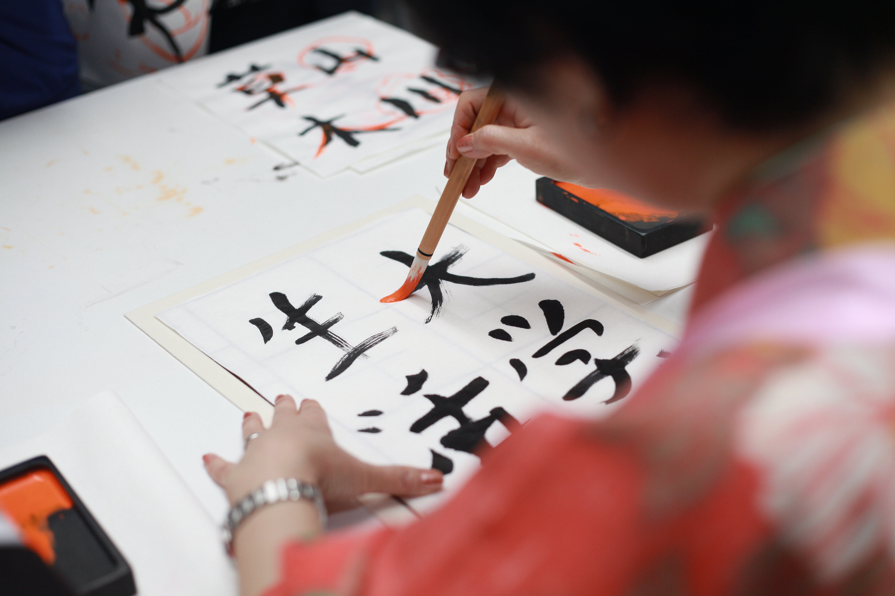

A Japán Kultúra!
Miért különleges a japán nyelv?
A japán nyelvet (nihongo, nippongo, 日本語) 126 millió ember beszéli anyanyelvként, ezzel a kilencedik legnagyobb beszélőközösségű nyelv a világon. E közösség legnagyobb része Japánban él, ezen kívül első vagy második nyelvként csak Palauban beszélik. Standardizált változata (hjódzsungo) a tokiói dialektuson alapszik. A japán nyelvben három írásrendszer van: a hiragana és a katakana szótagírások, a kandzsi kínai eredetű szóírás, de ezek mellett időnként használatos még a rómadzsi is, ami a latin betűs írás neve.
Változások a nyelben
1947-ben az amerikai megszállók nyomására az addigi 50 000 jelből álló jelrendszer helyett az alap jelkészlet számát 1850-re korlátozták, de 1981-ben a listát 1945 tételre, 2010-ben pedig 2136-ra bővítették. A többi írásjegy sem tűnt el azonban teljesen, például a kandzsi kentei vizsga legmagasabb szintjén ma is 6355-nek az ismeretét követelik meg.
Modern vagy régi a kultúra? Hát mindkettő!
- Modern:
-
- Anime
- Játékok
- Új,modern bárok
- Régi:
-
- Kimono
- Torii kapuk
- Építészet